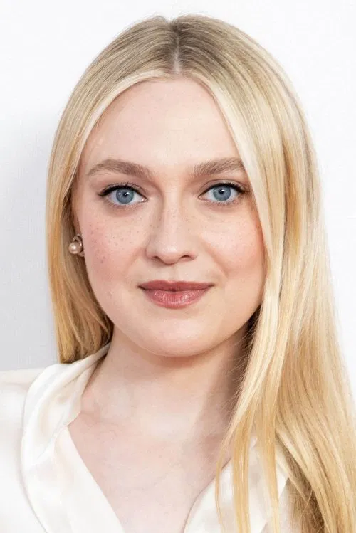
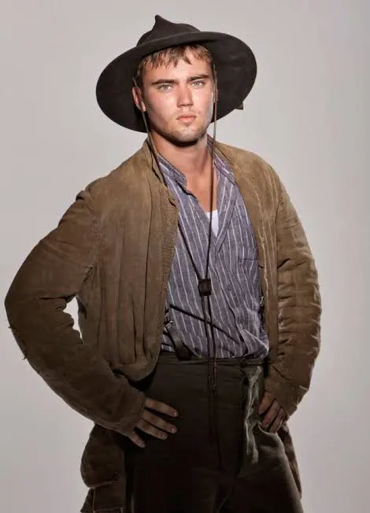

"We are the closest thing our world has to royalty. You have no idea of the scope of our authority."
The Volturi are the oldest and most powerful coven of vampires in the world — the de facto rulers of vampire society, based in the ancient city of Volterra, Tuscany, Italy. They have governed the vampire world for over three thousand years, maintaining the single law that makes vampire existence possible: the secret must be kept. Humans must not know that vampires exist.
They are not villains in the straightforward sense. The Volturi provide order, and without order the vampire world would collapse into chaos that would inevitably expose itself to humanity. Their methods are brutal and their power is absolute, but their purpose is real. What makes them dangerous is that their sense of justice has slowly, over millennia, become indistinguishable from their desire for power.
The Volturi rose to power approximately 3,000 years ago in the ancient world, displacing a previous ruling coven — the Romanian Vladimir and Stefan — in a war that left the Romanians defeated but not destroyed. Aro, Caius, and Marcus formed the original triumvirate, with their respective mates: Sulpicia, Athenodora, and Didyme.
Their base in Volterra is deliberate — the city's human government has been complicit in keeping Volturi activities secret for centuries. Volterra has no vampire problem; tourists and travellers sometimes disappear, but the city is otherwise prosperous and safe. This arrangement has held for a thousand years.
Their collection of gifted vampires — the Volturi Guard — is the most powerful assembly of supernatural abilities ever gathered in one place. Aro has spent three millennia specifically seeking and recruiting gifted vampires, building a force that no single coven or alliance has been able to challenge.
The true leader of the Volturi, though he presents himself as an equal among three. Aro is ancient, charming, genuinely enthusiastic about gifted vampires, and utterly without mercy when the law is broken. His power — reading the complete mental history of anyone he touches — makes him the most comprehensively informed being on earth. He uses this warmly, almost affectionately. The warmth is real. The ruthlessness underneath it is equally real.
Played by Michael SheenThe most openly aggressive of the three, Caius has no supernatural gift — an unusual lack in the Volturi leadership — and has spent three thousand years compensating through political intelligence and a ferocity that other vampires find genuinely frightening. He is the one who prosecutes. He despises werewolves with a personal hatred that has historical roots he doesn't discuss.
Played by Jamie Campbell BowerMarcus is the tragedy of the Volturi. He can see every relationship — its strength, nature, and depth — as a visible thing. He has not cared about anything since Didyme, his mate, died two thousand years ago. He performs his role at Volturi meetings with the flat affect of a man going through motions he no longer believes in. His power is extraordinary and he uses it without interest in the results.

JaneProjects the illusion of excruciating pain — her gift is the Volturi's primary enforcement tool. She is perhaps sixteen, has been a vampire for centuries, and is entirely without compassion.
AlecJane's twin. Can sever all senses — sight, sound, touch, taste, smell — rendering targets completely helpless. More dangerous than Jane because his gift affects multiple people simultaneously.Bella and Edward travel to Volterra after Edward's suicide attempt in the sunlit plaza. The first meeting with Aro establishes the Volturi's interest in Bella — specifically, her immunity to mental gifts. Aro wants her. The Cullens leave with a promise: Bella will be turned, or she will be killed to preserve the secret.
Renesmee — Bella and Edward's half-human, half-vampire daughter — is misidentified as an immortal child (a forbidden creation). The Volturi use this as a pretext to assemble their full guard and travel to Forks in force. The confrontation in the field is the saga's climax. Bella's shield, covering the entire Cullen alliance, neutralises the Volturi's gifts. The confrontation ends without combat — but the threat is never entirely resolved.